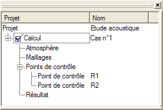

Cette vue est principalement composée d'un arbre représentant l'arborescence du projet courant :

Un projet est avant tout constitué d'un site racine, représenté dans la fenêtre de gestion de site ainsi que d'un ou plusieurs calcul, eux-mêmes composés des éléments suivants :
Un projet peut contenir plusieurs calculs mais un seul peut être actif à un instant donné.
Les actions associées aux éléments listés sont disponibles à partir du menu contextuel qui apparait lors d'un clic droit sur l'élément intéressé. On peut par exemple, pour tous les éléments, affichés leur boîte de dialogue associée afin d'en modifier leurs paramètres en validant le choix "Propriétés" dans le menu contextuel.
Pour visualiser le projet complet dans une fenêtre 3D, il suffit de cliquer droit sur le projet et de choisir "Modeleur", une fenêtre de type modeleur de site s'affichera alors.